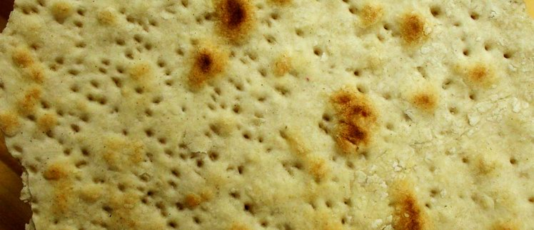

The Jewish Character of Worship
Who are we? Every wave of aliyah asks itself this question again and again. They all searched for roots, they all tried to find a mirror in which they could understand and find themselves. We ask this question too. An answer like "you are a new creation… and there is neither male nor female" no longer seems so convincing. What does fitting praise mean, KI NA'IM NAVA TEHILA (for it is pleasant; and praise is comely, Ps. 147:1), here, in this holy place, Eretz Israel, of which our fathers dreamed and wept for thousands of years, ba-shana ha-ba'a bi-Yerushalayim? What does Jewish praise, glorification, worship mean?
Author: Ephraim Kalish
I began writing down these notes long ago, in fact from the very beginning of our almost twenty years in Israel, the land of our fathers. The question does not leave me and makes me return to it again and again.
Part I. On our identity and mentality

What does it mean to be a people before Him? What does our identity mean for us? What is Jewish art? Is it enough for the musical expression of our worship and praise to be Jewish (biblical) in essence, while its form does not matter?
Is there any point for those of us who have become thoroughly Russian, French, American and so on, in fact assimilated, to return to this subject? Most of us know neither the history of Israel nor its culture, and often not the language. It is hard for us to get used to the idea that Israel is the East. And we bear some diaspora name, like Edik and so on ;-) (I mean myself: my diaspora name is Eduard, and my Jewish name is Ephraim). Well, yes, now we are a new creature, and as long as a person is good… :-)
I am sure that Yisrael is not what the nations think of him. Still less is he what he thinks of himself and how he pictures himself. He is what his Creator and Father in heaven has said of him. And if He said, "Ye shall be a people unto Me…", then so it will be! It makes sense to look for the "spirit, soul and strength" of Yisrael in the prophecies spoken about us. The character, mentality and calling of his tribes are in the blessings of Yaakov and Moshe (see those passages). There the character and calling of each of them is described, and of course in the prophets too.

MENTALITY [from Latin mens, mentis: mind, thinking; prudence, judgement; way of thinking; consciousness, conscience; opinion, view]. 1. A person's spiritual activity, his ability to reflect and form his own opinion about the objects, properties and relations of the real world. 2. Cast of mind, the character of feelings and thinking. (Great Dictionary of Foreign Words, IDDK, 2007, in Russian.)
Is our language HEBREW?
Language is inseparably linked with the mentality of a people. Language is a kind of genetic code of a people, in which the generations are imprinted.
It is very interesting to watch our brother the repatriate (the very word: to repatriate is to return prisoners of war, civilians, refugees to their homeland) in our relationship with the Hebrew language.
One could say a great deal about our love and hatred for it, our fears and rejection, our discomfort and awkwardness, about how the sweat comes out on our foreheads when we try to set out our point of view in a language remote and until now unknown to us, when we say not what we want to say but what we are able to say, and this drives us to a state close to despair (especially those of us who like to talk a lot…).
And this is understandable to anyone who has ever taken up another language, not the one we absorbed with our mother's milk, then drilled at school, and which many of us never learned to use correctly and beautifully. But at any rate that language is our own (that is why it is the mother tongue), a language that took an active part in forming our mentality and vividly reflects it.
Seventy years of the Iron Curtain and complete isolation from any culture and language other than Russian and Soviet. The consequence is difficulty in understanding and accepting any other culture and language. This largely explains our difficulties, but does not justify them.
Should we go deeply into our language, the language in which we worship the Creator (the Hebrew of the SCRIPTURES, the language of the TORAH and the PROPHETS)? Ask the professionals; they will tell you that every language has its own musicality and imagery and, of course, reflects the mentality of the people who speak it…
How many of us read the Scriptures in Hebrew? Even a little? Even the passages important to us? Even just analysing individual key words, breaking them down into roots, parts, letters…
I am by no means calling on anyone to forget and abandon all the wealth of the Russian (or other) language and culture that we brought out of the country of our exodus. I have great respect for families where the children, even those born in Israel, speak the language of the country of exodus purely and correctly. This is especially common among English speakers, most of whose children have two native languages, Hebrew and English. And in some families Russian as well. But that is not what I am talking about now.
I do not think it angers our Father that we praise Him in an American or a European way, no. But what seems to me to keep His joy from being complete is that we still refuse to become Israelis.